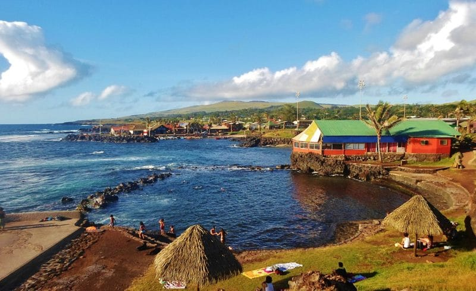
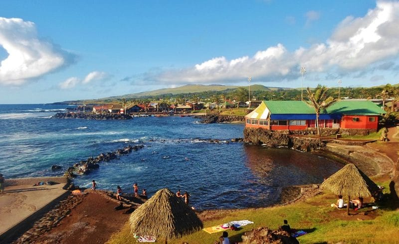

Paques
 

Nos formules :
Description :
L'île de Pâques, située au cœur du Pacifique Sud, est une terre mystique et isolée renommée pour ses statues monumentales en pierre volcanique, les Moaï, qui veillent silencieusement sur des paysages d'une beauté à couper le souffle.
Keu Henua Eco-Hostal
Nous sommes une entreprise familiale basée sur les valeurs inculquées par nos ancêtres sur l’île de Pâques: amour pour Rapa Nui, dévouement au travail et fierté de nos racines. Notre objectif principal est d’offrir aux touristes un espace de détente en contact avec la nature, répondant à leurs besoins d’hébergement, tout en étant encouragés et guidés pour visiter l’île et ses lieux les plus étonnants, toujours avec prudence et respect pour ce patrimoine de l’humanité.
Apart Hotel Ananá
Nous vous souhaitons la bienvenue à notre Apart Hotel Ananá, un hébergement confortable, familial et pas cher situé à seulement 80 mètres de la mer, où vous et votre famille pourrez profiter d’un séjour inoubliable à Rapa Nui, dans un environnement détendu, calme et sécurisé.
Residencial Miru
ILe Residential Miru est un hébergement familial proposant des chambres confortables dans un environnement familial, entouré de jardins, au cœur de Hanga Roa, à proximité des commerces, des restaurants et de nombreuses attractions telles que des spectacles de danse rapa nui, des tatouages, etc.